HDC LABS
Computer Vision
Edge Deployment
Synthetic Data
Work & Activities
-
2024
-
2024 – 2025
-
2025
-
2025 – 2026
-
2026 ~
-
2026 ~
-
2025 – 2026K-Digital Training (KDT)강사, 멘토Instructor, Mentor기사 ↗News ↗생성형 AI 분석 및 서비스 개발Generative AI for Analytics & Service Development
-
2026일학습병행Work-Study Program기업현장교사 3급On-site Mentor
Projects
프로젝트를 누르면 상세 보기로 바뀝니다 Select a project to open its details
2026
2025
2024
상시Ongoing
비전 데이터 탐색 Agent Vision Data Exploration Agent
핵심 역할Key role
Agent 시스템 개발 주도 (데이터 색인, VLM 검수, 워크플로우, 학습 연동)Led agent system development (data indexing, VLM review, workflow, training integration)
협업데이터 정리(엔지니어 1명)Withdata curation (1 engineer)
1추진 배경Background
기존 문제점Problem
- 사내 NAS의 여러 도메인 비전 데이터셋이 다양한 경로와 폴더로 분산
- 탐색부터 후보 구성, GPU 학습 제출까지 데이터 구조와 Slurm 숙지 필요
- 자연어 검색 결과가 실제 요청 조건과 일치하는지 확인 어려움
- Vision datasets from many domains were scattered across NAS paths and folders
- Going from search to training sets and GPU jobs required knowing the data layout and Slurm
- Hard to tell whether search results matched the request
업무 목표Objectives
- 비개발자가 보유 데이터의 종류와 규모를 빠르게 파악하는 탐색 환경 구축
- 탐색, 검수, 학습 후보 구성과 승인 기반 학습을 하나의 흐름으로 연결
- Help non-developers see what data exists and how much
- Connect search, review and approved training in one flow
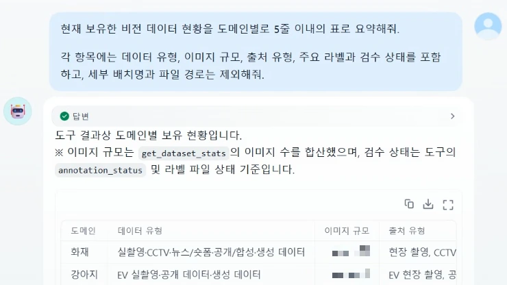
2Agent 워크플로우Agent Workflow
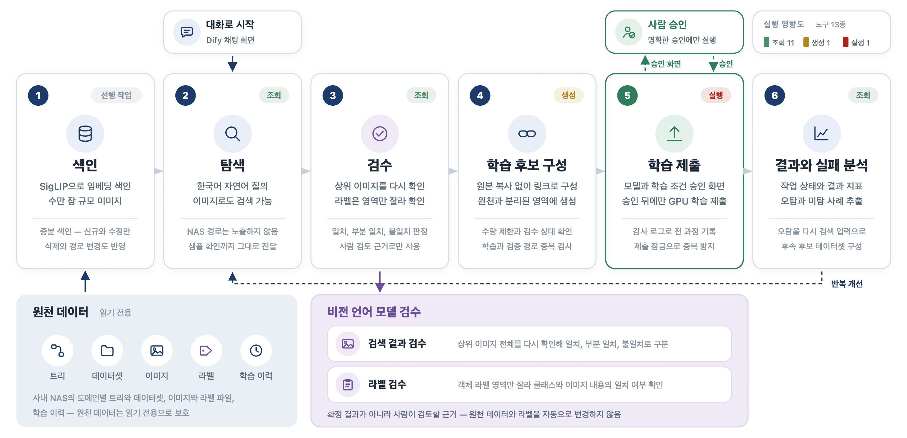
처리 흐름Workflow
- SigLIP 임베딩으로 색인하고 자연어 및 이미지 질의로 검색신규 및 변경 데이터 증분 색인
- VLM으로 검색 결과와 라벨을 재확인하고 원천과 분리된 영역에 후보 구성
- 사람 승인 후 GPU 학습을 제출하고 오탐 사례는 다시 탐색으로 연결
- Index with SigLIP embeddings and search by text or imageIncremental indexing of new and changed data
- A VLM re-checks hits and labels; candidate sets are built apart from source data
- GPU training runs after human approval; false positives loop back to search
설계 원칙Design principles
- 의도 해석과 설명은 대화 모델, 경로 검증과 실행 조건은 결정론적 코드
- 기능을 조회, 생성, 실행으로 나눠 실행 단계에만 사람 승인 적용원천 데이터 읽기 전용
- Chat model for intent and explanation; deterministic code for paths and run conditions
- Tools split into query, create and execute; only execution needs human approvalSource data stays read-only
3구현과 검증Build & Validation
담당 업무Responsibilities
- SigLIP과 LanceDB 기반 자연어 및 이미지 검색, 증분 색인 구축
- VLM 검수와 학습 후보 구성을 잇는 LangGraph 멀티모달 Agent 설계
- 데이터 조회와 GPU 학습 권한을 분리하고 실제 학습에 사람 승인 적용수량, 검수 상태, 경로 중복 검사와 감사 로그, 제출 잠금 적용
- Built text and image search with incremental indexing on SigLIP and LanceDB
- Designed a LangGraph multimodal agent linking VLM review to training-set building
- Separated data-query and GPU-training permissions and required approval for real trainingCount, review-status and path-overlap checks, audit log and submission lock
업무 성과Achievements
- 수만 장 규모 비전 데이터를 통합 색인해 대화형 현황 탐색 경로 구축
- 탐색부터 승인, 실제 GPU 학습과 결과 조회까지 E2E 동작 검증승인 없는 실행과 동일 학습의 중복 제출 차단 확인
- 모델 오탐 이미지를 유사 데이터 재탐색과 후속 학습 후보 구성으로 연결
- Built a conversational way to explore tens of thousands of indexed vision images
- Validated end to end from exploration and approval to real GPU training and resultsUnapproved runs and duplicate submissions blocked
- Linked false-positive images to similar-data search and the next training candidates
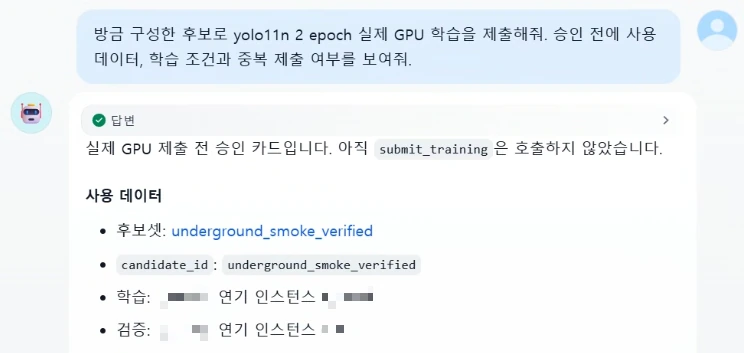
비전 기반 행동 인지 케어 로봇 Vision-Based Care Robot 개인 프로젝트Personal
핵심 역할Key role
케어 로봇 설계 및 개발 주도 (컨셉, 인지 평가, 질문 우선 FSM, 논문 발표)Led care-robot design and development (concept, perception evaluation, ask-first FSM, paper)
1추진 배경과 외형, 행동 설계Background, Form & Behavior Design
기존 문제점Problem
- 혼자 사는 고령자는 밤에 가장 취약하지만 도움은 가장 멀리 있음
- 카메라 모니터링은 감시로 느껴져 거부되는 경우가 많음
- 공개 벤치마크의 높은 정확도가 로봇 카메라 시점에서 유지되는지 불확실
- Older adults living alone are most vulnerable at night, when help is farthest away
- Camera monitoring feels like surveillance and is often refused
- Unclear whether high public-benchmark accuracy holds at a robot camera's viewpoint
업무 목표Objectives
- 이상 단서를 경보 대신 질문의 계기로 쓰는 침대 옆 케어 로봇 설계
- 벤치마크 성능과 로봇 시점 성능을 분리해 실제 상호작용 지표로 평가
- Design a bedside care robot that treats a distress cue as a reason to ask, not to alert
- Separate benchmark from robot-view performance and score what matters for interaction
담당 업무Responsibilities
- 기성 팬틸트 카메라에 종이 얼굴을 입혀 렌즈가 눈동자가 되는 외형 설계Tapo C220과 Jetson Orin Nano로 1차 실물 프로토타입 제작
- 고개 돌리기, 기울이기, 끄덕임으로 주목, 망설임, 안심을 표현하는 행동 설계실제 팬틸트 구동은 이번 평가 범위에서 제외
- 벽을 향해 눈을 감는 프라이버시 상태로 보지 않음을 확인 가능하게 설계
- Gave a stock pan-tilt camera a paper face, its lens as the pupilFirst physical prototype on a Tapo C220 and Jetson Orin Nano
- Designed turns, tilts and nods that read as attention, hesitation and reassuranceActual pan-tilt motion was outside this evaluation
- A privacy pose facing the wall with the eye shut makes not watching visible
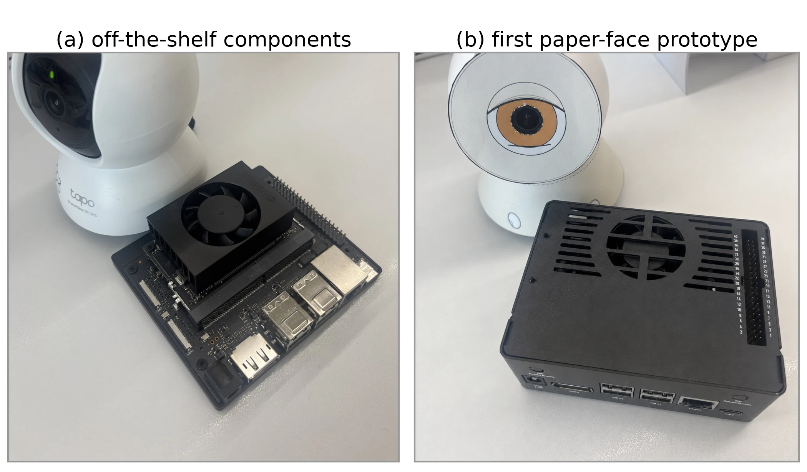
2케어 로봇의 인지와 질문 흐름 설계Perception & Question Flow of the Care Robot
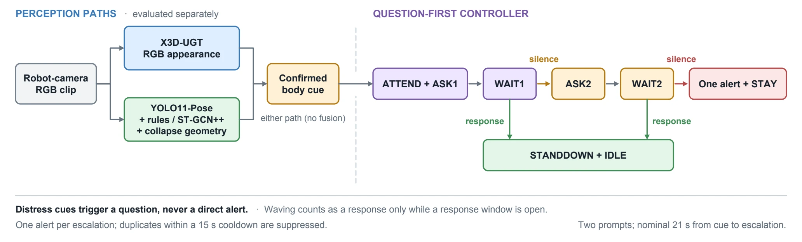
처리 흐름Workflow
- 로봇 카메라 640×360 영상에서 신체 단서를 인식해 ROS 2 이벤트로 전달
- 확인된 단서마다 질문 2.5초와 응답 창 8초를 두 번까지 반복유효 응답이나 손 흔들기 시 중단, 두 번 모두 무응답일 때만 알림 1회
- 알림 뒤에는 사용자 곁에 머무르고 15초 쿨다운으로 중복 알림 억제
- Recognise body cues in the robot camera's 640×360 stream and pass them on as ROS 2 events
- Each confirmed cue opens up to two rounds of a 2.5 s prompt and an 8 s response windowA valid response or a wave stands down; one alert only after two silent windows
- After an alert the robot stays with the person; a 15 s cooldown blocks duplicates
설계 원칙Design principles
- 인지와 제어를 분리해 모델을 바꿔도 상위 행동 정책 유지
- RGB 외형 경로와 포즈 중심 경로를 따로 평가하고 결합하지 않음
- Perception and control are separate, so the behaviour policy survives a model swap
- The RGB appearance path and the pose-centric path are evaluated separately, never fused
3검증과 연구 발표Validation & Publication
담당 업무Responsibilities
- 로봇 카메라 1~2m 거리 단일 배우 영상 28개로 두 인지 경로 비교이상 행동 16개, 손 흔들기 4개, 정상 8개
- 카메라와 모델을 우회해 ROS 2 토픽에 이벤트를 주입하는 시험 환경 구성첫 응답 5회, 무응답 5회, 경계 조건 3회
- Compared two perception paths on 28 single-actor clips from the robot camera at 1–2 m16 distress, 4 waving, 8 normal
- Built a harness injecting events into ROS 2 topics, bypassing camera and models5 early responses, 5 no-responses, 3 boundary cases
업무 성과Achievements
- 벤치마크 97.7% RGB 모델이 로봇 시점에서 질문 단서 2/16에 그침 확인포즈 중심 경로는 12/16, 정상 영상의 불필요한 질문 2/8
- 질문 우선 FSM 이벤트 주입 시험 13/13회 통과무응답 시 평균 21.65초 뒤 알림 1회, 중복 알림과 교착 없음
- 연구 성과 발표 — 워크숍 논문 1건, 로봇 디자인 대회 1건로봇 시점 행동 인지 전이 평가 (IROSW 2026)케어 로봇 사용 시나리오와 행동 설계 (RO-MAN 2026 RDC)
- A 97.7% benchmark RGB model raised an askable cue in only 2/16 robot-view clipsThe pose-centric path reached 12/16, with 2/8 needless questions on normal clips
- Passed 13/13 event-injection tests of the ask-first FSMOne alert on average 21.65 s after silence, no duplicates or deadlocks
- Presented the work — 1 workshop paper, 1 competition entryRobot-view action-recognition transfer (IROSW 2026)Care-robot scenarios and behavior design (RO-MAN 2026 RDC)
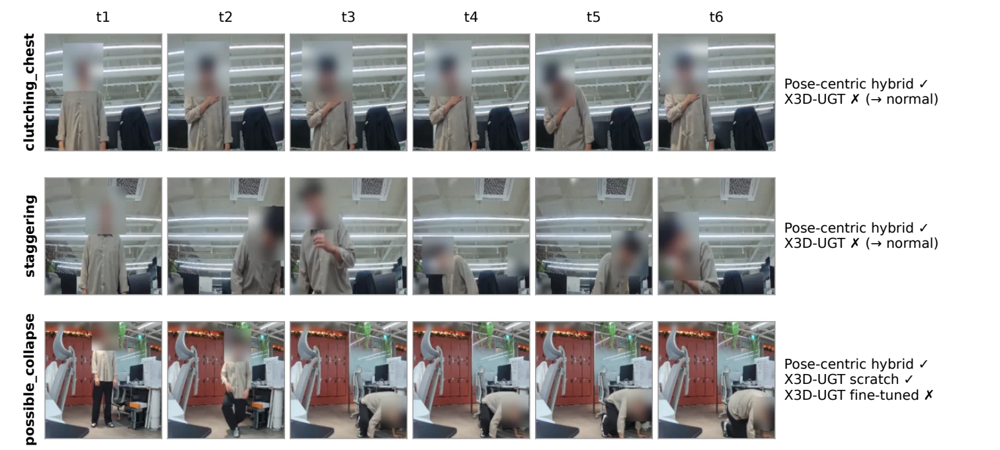
아이파크몰 AI 방문자 분석 PoC IPARK Mall AI Visitor Analytics PoC
핵심 역할Key role
기술 PM (PoC 범위와 KPI 설계, 개발 실행과 현장 검증 조율)Technical PM (PoC scope and KPIs, delivery, field validation)
협업AI 엔지니어 3명, PM(내부 사업개발팀)With3 AI engineers, PM (in-house business development)
1방문자 분석 PoC 설계와 현장 검증Visitor-Analytics PoC Design & Field Validation
업무 목표Objectives
- 출입구 CCTV 기반 방문자 IN/OUT 및 특성 분석의 현장 적용 가능성 검증
- 실환경 데이터 기반 모델 성능과 운영 조건 확인
- Validate whether entrance-CCTV visitor IN/OUT and attribute analysis works in the field
- Check model performance and field operating conditions
담당 업무Responsibilities
- 온프레미스 환경과 개인정보 보호 조건을 반영한 CCTV 데이터 처리 구조 설계
- 기능별 KPI와 평가 기준 수립, AI 엔지니어 3명의 실행 항목과 완료 기준 구조화
- 성별과 연령 예측 모델 학습용 공개 데이터셋 RAPv2 고해상도 증강Qwen-Image-Edit로 자세와 의복은 유지하고 디테일만 복원84,928장 생성, 5종 지표 자동 검수로 10,413장 재생성
- Designed CCTV data processing for on-premises and privacy constraints
- Set per-feature KPIs and evaluation criteria, and structured work and done criteria for 3 AI engineers
- Augmented the public RAPv2 dataset in high resolution for the gender and age modelsQwen-Image-Edit kept pose and clothing and restored only detail84,928 generated, 10,413 regenerated after five-metric automatic QC
업무 성과Achievements
- 영상과 얼굴 정보를 외부로 전송하지 않는 현장 PoC 운영22개 CCTV, 3주 운영, 방문 기록 250만 건 이상 처리
- 대표 출입구 직접 계수와 CCTV 재검수로 계수 정확도 약 95% 확인외형 판정 평가 라벨 기준 성별 90.7%, 연령대 90.5% 일치
- Retail 챗봇 260문항 평가 정답률 83.1%답변 품질 3.82/5, 사실 정확성 4.28/5
- Ran the on-site PoC with no video or face data leaving the site22 CCTV cameras, 3 weeks, 2.5M+ visit records
- Confirmed ~95% counting accuracy by hand counts at representative entrances, re-checked on CCTVGender 90.7% and age-group 90.5% agreement with appearance-based evaluation labels
- 83.1% accuracy on the 260-question retail chatbot evaluationAnswer quality 3.82/5, factual accuracy 4.28/5
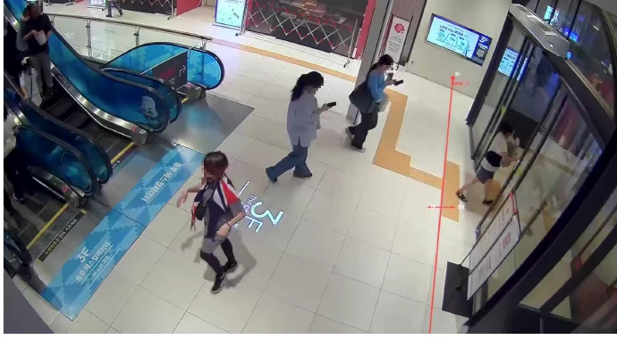
계수선Counting line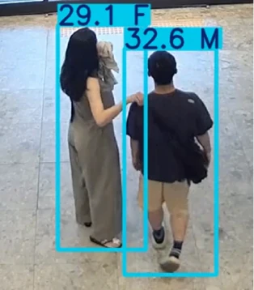
성별과 연령Gender and age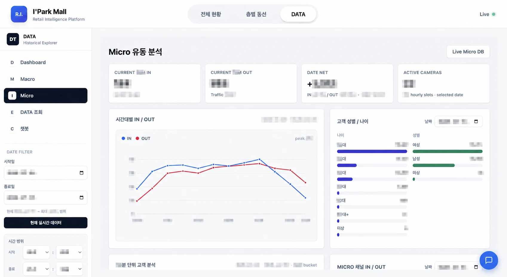
대시보드Dashboard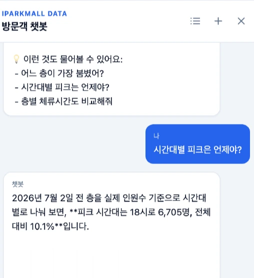
챗봇Chatbot2KPI 평가셋 구축을 위한 라벨링 진척 자동화Labeling Progress Automation for the KPI Evaluation Set
기존 문제점Problem
- 비디오 라벨링 특성상 완료 영상 수와 실제 객체 처리량 간 차이 발생
- In video labeling, completed-clip counts diverged from the objects actually processed
담당 업무Responsibilities
- 다중 사용자 라벨링 도구 구축 및 검수 기준 설계
- n8n으로 작업자별 객체 수와 달성률을 집계해 Dooray로 공유
- 원본 작업 시트는 읽기 전용 유지, 발송 이력으로 반복 알림 억제
- Built a multi-user labeling tool and designed review criteria
- Aggregated per-worker object counts and progress with n8n and shared them to Dooray
- Kept the source sheet read-only and suppressed repeat alerts with a send log
업무 성과Achievements
- 연령대 및 성별 라벨 데이터 약 5만 장 구축
- 작업자 5명의 진척을 영상 수 대신 객체 수 기준으로 자동 공유
- Built ~50k age-group and gender labels
- Shared progress for 5 workers automatically, counted in objects rather than clips
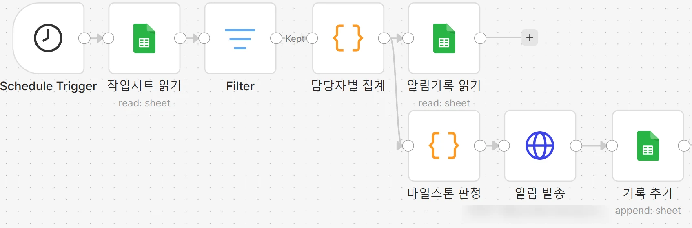
3품질 관제 Agent로 확장Extension to a Quality-Monitoring Agent
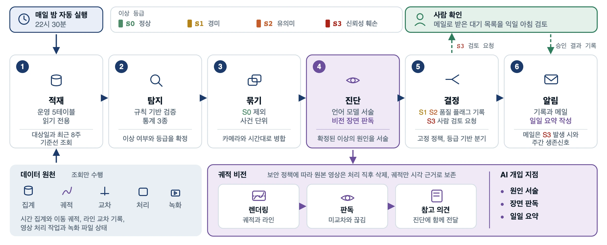
기존 문제점Problem
- PoC 운영 중 녹화 기록과 방문객 지표 이상을 정기 점검할 체계 필요
- Running the PoC showed a need to routinely check camera recordings and visitor-metric anomalies
담당 업무Responsibilities
- 규칙과 통계로 이상과 심각도를 판정하고 GPT-5.5는 원인 진단에만 적용
- 방문객 통계와 이동 궤적 이미지를 결합한 멀티모달 진단 흐름 설계
- 고위험 이상은 메일 알림과 사람 검토, 운영 데이터는 읽기 전용 조회
- Decided anomalies and severity with rules and statistics, using GPT-5.5 only to diagnose causes
- Designed a multimodal diagnosis combining visitor statistics with trajectory images
- Sent high-risk anomalies to email review and read operational data read-only
업무 성과Achievements
- 실제 운영 데이터로 이상 탐지, 멀티모달 진단과 사람 검토 E2E 검증
- 사람 검토를 거쳐 7개 카메라의 계수선 또는 관심 영역 설정 조정조정 후 반복 동선에서 발생하던 비정상 계수의 감소 방향 확인
- Validated detection, multimodal diagnosis and human review end to end on live data
- Adjusted counting lines or ROIs on 7 cameras after reviewAbnormal counts from repeated movements declined after the change
count_inflation반복 교차 및 계수선 위치 진단Repeated crossings and line positionS2
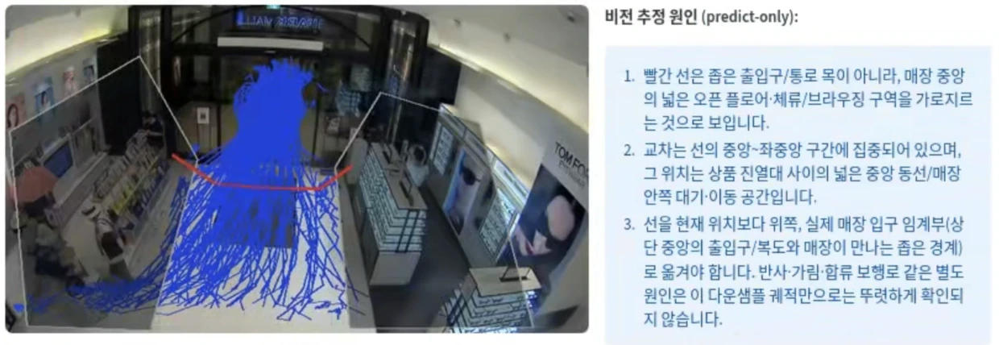
traffic_spike이동 궤적 기반 원인 추정Cause estimated from trajectoriesS2
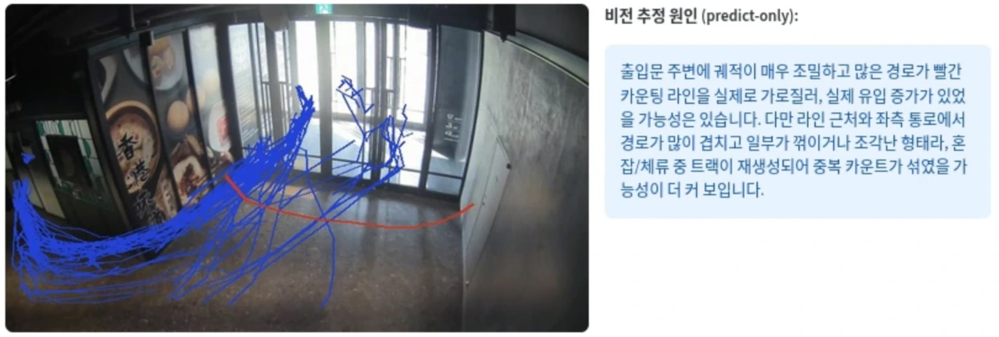
엘리베이터 내부 상황 분석 시스템 In-Elevator Situational Analysis System
핵심 역할Key role
AI 시스템 개발 주도 (데이터, 모델 학습, 판단 로직, 배포)Led AI system development (data, model training, decision logic, deployment)
협업하드웨어(팀 엔지니어 2명, 내부 IoT팀), E/V 제어(현대엘리베이터)Withhardware (2 team engineers, internal IoT team), E/V control (Hyundai Elevator)
1기술 PoC 검증Technical PoC Validation
업무 목표Objectives
- AI 기반 엘리베이터 내부 상황 실시간 분석 시스템 개발
- 점유 상태, 반려견 합승 등 특이상황 자동 탐지 및 대응
- Developed a real-time AI system for analyzing situations inside elevators
- Automatically detect and respond to special cases such as cabin occupancy and pets boarding
담당 업무Responsibilities
- 기술 제휴 MOU 검토용 내부 상황 분석 PoC 설계
- 반려견 검출 및 점유율 추정 모델 구축
- Designed the in-elevator situational-analysis PoC to support a partnership MOU
- Built models for pet detection and cabin-occupancy estimation
업무 성과Achievements
- 3D detector와 VLM 결합 구조로 실시간 동작 가능성 검증RTX 6000 Ada 기준 약 3 FPS 실측
- HDC랩스, HDC현대산업개발, 현대엘리베이터 기술 제휴 MOU 체결PoC 검증 결과를 3사 기술 제휴 검토의 기술적 근거로 활용HDC현산, 서울원 아이파크에 AI 승강기 도입
- Verified real-time feasibility with a combined 3D-detector + VLM architecture~3 FPS measured on an RTX 6000 Ada
- Reached a three-party MOU among HDC LABS, HDC Hyundai Development, and Hyundai ElevatorPoC results served as the technical basis for the three-party partnership reviewHDC Hyundai Development to deploy AI elevators at Seoul One IPARK

2엣지 환경 재설계와 데이터 전략Edge Redesign & Data Strategy
기존 문제점Problem
- 협력사의 10Hz 상태 송신 요구 등 실서비스 엣지 환경 제약 충족 필요
- top-view 차폐 등 엘리베이터 특수 시점 대응 데이터 부족
- Real-service edge constraints such as a partner's 10 Hz status-streaming requirement had to be met
- Data was scarce for the elevator's special viewpoint, including top-view occlusion
담당 업무Responsibilities
- 엣지 기반 경량 단일 파이프라인으로 재설계
- 운영 시나리오 중심 판단 로직 최적화 및 CAN payload 출력 연동
- 도메인 특화 합성 데이터 생성 체계와 실환경 데이터 확보 및 정제
- Redesigned the system into a lightweight, edge-based single-detector pipeline
- Optimized scenario-driven decision logic and CAN-payload output integration
- Built a domain-specific synthetic-data pipeline and collected/cleaned real-world data
업무 성과Achievements
- Jetson에서 10Hz 상태 송신 조건 충족 및 사내 엘리베이터 2대 실연동전체 프로세스 10~13 FPS 실측, E/V 운행 및 도어 제어 검증
- 내부 7개 시나리오 평균 KPI 97.7% 달성으로 제품화 가능성 확인
- 도메인 특화 합성 데이터 생성 연구로 반려견 검출 성능 향상, 논문 1건 게재반려견 검출 mAP50-95 0.47 → 0.79합성 데이터 생성 자동화 (WACVW 2026)
- Met the 10 Hz status-streaming requirement on Jetson and integrated two in-house elevators~10–13 FPS end-to-end; validated E/V operation and door control
- 97.7% average KPI across 7 internal scenarios, confirming productization readiness
- Domain-specific synthetic-data-generation research improving pet detection, with 1 paper publishedPet-detection mAP50-95 0.47 → 0.79Automated synthetic data generation (WACVW 2026)

3현장 배포 자동화Field Deployment Automation
기존 문제점Problem
- 코드 수정마다 현장 엘리베이터로 가서 USB로 수동 업데이트하는 운영 비효율
- 개발 PC와 현장 환경 차이, 버전 추적 부재로 안정적 배포 어려움
- Every code change required visiting the elevator for a manual USB update
- Environment gaps between dev PC and field, with no version tracking, made stable deployment hard
담당 업무Responsibilities
- Jetson(ARM64) 환경의 모델 빌드 및 도커 기반 배포 파이프라인 구축
- 사무실 Jetson 기반 self-hosted runner로 네이티브 빌드 환경 구성
- PT hash engine cache 도입으로 동일 PT 재빌드 생략
- Built a model-build and Docker-based deployment pipeline for the Jetson (ARM64) environment
- Configured a native build environment with an in-office Jetson self-hosted runner
- Introduced a PT-hash engine cache to skip rebuilds for the same PT
업무 성과Achievements
- 수동 USB 업데이트에서 코드 변경 기반 자동 빌드 및 배포 구조로 전환사내 반영까지 약 2분
- Shifted from manual USB updates to an automatic build-and-deploy flow triggered by code changes~2 min to in-house rollout
4연구 확장 및 IPResearch & IP
연구 계기Background
- 사내 사업개발팀의 추가 기술 개발 가능성 문의
- Inquiry from the in-house business-development team on the feasibility of additional technical development
연구 성과Results
- 가능성 검토를 위한 후속 연구 진행
- 관련 특허 3건 발명자 등재
- Conducted follow-up research to assess that feasibility
- Named inventor on 3 related patents


지하주차장 화재 감지 보조 시스템 Underground Parking Fire Detection Assistance System
핵심 역할Key role
AI 시스템 개발 주도 (데이터, 모델 학습, 판단 구조)Led AI system development (data, model training, decision pipeline)
협업PoC(팀 엔지니어 2명), 하드웨어/현장 포팅(수호이미지), 플랫폼/알람(내부 플랫폼팀)WithPoC (2 team engineers), hardware/field porting (Suho Image), platform/alerts (internal platform team)
1기술 PoC 및 연구Technical PoC & Research
연구 필요성Motivation
- 잇따른 지하주차장 전기차 화재 발생으로 전용 화재 감지 시스템 요구
- 이상온도 조기 감지 및 자동 알림이 가능한 화재 감지 보조 시스템 구축 필요
- Recurring EV fires in underground parking lots created demand for a dedicated detection system
- An auxiliary system with early thermal-anomaly detection and automatic alerts was needed
담당 업무Responsibilities
- 지하주차장 CCTV 환경 특화 합성 데이터 생성
- 화재/연기 탐지 YOLO 모델 재학습 및 검증
- YOLOv8s + VLM(Florence2) 기반 탐지 PoC 설계
- Built underground-parking CCTV-specific synthetic data
- Retrained and validated YOLO fire/smoke detectors
- Designed a YOLOv8s + VLM(Florence2) detection PoC
업무 성과Achievements
- 합성 데이터 활용으로 화재/연기 탐지 정량 성능 향상F1 0.82 → 0.86, 연기 recall 0.70 → 0.83
- 연구 성과를 지식재산권으로 확보 — 논문 1건 게재, 특허 1건 등록YOLO-VLM 기반 실내 화재 감지 (ICLRW 2025)
- Improved fire/smoke detection accuracy using synthetic dataF1 0.82 → 0.86, smoke recall 0.70 → 0.83
- Secured intellectual property from the work — 1 paper published, 1 patent grantedYOLO-VLM-based indoor fire detection (ICLRW 2025)

2현장 적용을 위한 재설계Redesign for Field Deployment
기존 문제점Problem
- 초기 VLM 중심 PoC 구조가 엣지 디바이스 제약으로 현장 적용에 한계
- The initial VLM-centric PoC hit field-deployment limits under edge-device constraints
담당 업무Responsibilities
- YOLOv8n + CLIP 경량 구조 + Hailo 듀얼칩으로 재설계
- 단순 모델 교체가 아닌 사후 검증(Detector → VLM) 판단 구조로 설계
- 외부 포팅 업체, 내부 플랫폼팀과 협업해 모니터링/알람 서비스 연동
- Redesigned to a YOLOv8n + CLIP lightweight architecture on a dual-chip Hailo runtime
- Designed a post-hoc verification (Detector → VLM) decision structure rather than a simple model swap
- Connected monitoring/alert services with an external porting vendor and the internal platform team
업무 성과Achievements
- 엣지 디바이스 제약을 충족하는 현장 적용 가능 구조 확보
- Secured a field-deployable structure that satisfies edge-device constraints

3실 적용 현황Field Deployment Status
담당 업무Responsibilities
- 화재 감지 보조 시스템 현장 시연 및 적용 작업
- 운영 중 모델 오탐 원인 분석 및 재학습 대응
- Ran on-site demonstration and deployment work for the auxiliary fire detection system
- Diagnosed model false-positive causes during operation and addressed them through retraining
업무 성과Achievements
- 광명센트럴아이파크 전기차 충전구역 실적용
- 반복 오탐 케이스를 재학습 데이터에 반영해 현장 대응 모델 개선운영 초기 대비 오탐 알람 약 88% 감소
- 현장 운영 데이터 기반 후속 고도화 연구로 논문 2건 추가 게재경량 초해상화 기술 검토 (ICCVW 2025)합성 데이터 생성 자동화 (WACVW 2026)
- Deployed in production at Gwangmyeong Central IPARK's EV charging zone
- Improved the field-response model by folding recurring false positives back into the training data~88% fewer false alarms compared with the initial operation period
- Published 2 follow-up papers from advancement research on field-operation dataLightweight super-resolution study (ICCVW 2025)Automated synthetic data generation (WACVW 2026)

지적재산권 확보 Intellectual Property Portfolio
업무 배경Background
- 자체 개발한 핵심 알고리즘과 시스템의 권리화
- HDC 그룹의 AI 기술 자산 확보 및 경쟁력 강화
- Patent prosecution for core algorithms and systems developed in-house
- Build the HDC Group's AI technology assets and strengthen competitiveness
담당 업무Responsibilities
- 주요 프로젝트 결과물에 대한 청구항 설계
- 특허 사무소가 작성한 명세서 검토
- 우선심사 신청을 위한 기술 자료 정리 및 근거 자료 작성
- 국제 학회 논문 작성, 투고, 심사 대응
- Drafted claim structures for the outputs of major projects
- Reviewed patent specifications drafted by external patent attorneys
- Compiled technical evidence and supporting documents for expedited examination requests
- Wrote, submitted, and managed reviewer responses for international conference papers
업무 성과Achievements
- KR 특허 13건 등록, 4건 출원 진행 (국내 3건 + 미국 1건)
- 국제 학회 논문 4편 게재
- 자세한 목록은 홈 Publications 및 Patents 섹션 참고
- 13 KR patents granted, 4 applications in progress (3 KR + 1 US)
- 4 papers published at international venues
- See the home page Publications and Patents sections for the full list